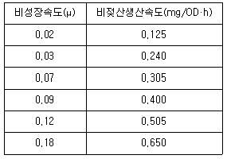
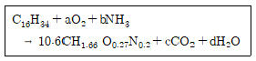

바이오화학제품제조기사 (2013-06-02 기출문제)
1과목: 미생물공학
1. 동조배양(synchronous culture) 미생물을 얻는 방법으로 적당치 않은 것은?
- 배양 온도를 주기적으로 변화시킨다.
- 휴지기의 미생물에 신선한 배지를 공급한다.
- 원심분리방법이나 필터를 이용하여 분리한다.
- 반복적으로 미생물 배양액을 희석시킨다.
(정답률: 46%)

2. 산업적으로 이용되는 미생물과 그 산물 또는 용도의 연결이 옳지 않은 것은?
- Thiobacillus – microbial leaching
- Aspergillus - α-amylase + protease
- Rhodotorula – acetone + butane
- Bacillus - protease
(정답률: 62%)
3. 보통 염색체의 외부에 존재하는 자율적(antomonous)이며 자기 복제를 하는(self-replicating) 이중 가닥 (double-strand) DNA는?
- 플라스미드(plasmid)
- 프로파지(prophage)
- 용원성 파지(temperate phage)
- Hfr 균주(High frequency recombination strain)
(정답률: 94%)
4. 대표적인 조상균류에 속하지 않는 것은?
- Rhizopus
- Aspergillus
- Mucor
- Absidia
(정답률: 61%)
5. 세포가 한번 분열하는데 30분 걸린다면 1개의 세포가 2048개로 되는데 걸리는 시간은?
- 4시간 30분
- 5시간
- 5시간 30분
- 6시간
(정답률: 100%)
6. 초산발효에 대한 설명으로 옳은 것은?
- 주요기질은 전분이다.
- 생산균은 Saccharomyces cerevisiae이다.
- 호기적 조건에서 발효가 일어난다.
- 발효액의 점도가 높아 연속공정이 어렵다.
(정답률: 84%)
7. Penicillin은 어떤 항생물질그룹으로 분류되는가?
- Aminoglycoside 계
- Macrolide 계
- β-lactam 계
- Polyene 계
(정답률: 93%)
8. 페니실린이 처음 발견되었을 당시보다 현재는 그 생산성이 매우 향상되었다. 이러한 생산성 향상과 가장 관계가 적은 것은?
- 연속배양공정개발
- 돌연변이 균주의 개발
- 배양배지의 최적화
- 발효공정의 개선
(정답률: 67%)
9. 생물전환반응(bioconversion)에 의한 아미노산 생산 기술의 특성이 아닌 것은?
- 반응 특이성이 높음
- 입체 특이성이 낮음
- 에너지 절약형임
- 상온, 상압에서 반응함
(정답률: 92%)
10. 유기산과 같은 목적산물의 생산이 에너지획득 대사과정에서 생산도리 때, 그 물질의 생산속도는 흔히 Leudeking-Piret 식[(1/x)dP/dt=αμ+β]으로 표현된다. 다음 표는 Lactobacillus delbrueckii의 젖산 발효 데이터이다. 이 결과를 Leudeking-Piret식으로 해석했을 때, 젖산생성의 비생산속도의 성장연관 (growth-associated) 상수(α)는 얼마인가? (단, x는 균체농도, P는 산물농도, μ는비성장속도)

- 0.1
- 1.36
- 3.13
- 5.44
(정답률: 79%)
11. 동결보존법으로 미생물을 보존하고자 할 때 사용되지 않는 동해방지제(cryoprotectant)는?
- 염화나트륨
- 글리세롤
- 설탕
- 디메틸설폭사이드
(정답률: 86%)
12. 펩톤의 원료로 사용되지 않는 것은?
- meat
- 카제인
- soy meal
- 당밀
(정답률: 76%)
13. 식초 생산에 관여하는 균은?
- Sterptomyces속
- Bacillus속
- Acetobacter속
- Streptococcus속
(정답률: 90%)
14. 전분으로부터 포도당을 생산하고자 할 때 쓰이는 효소는?
- amylase
- glucose isomerase
- hexokinase
- lipase
(정답률: 62%)
15. 유전적으로 불안정한 미생물을 보존하고자 할 때 적합한 방법은?
- 계대배양을 지속적으로 수행한다.
- 시험관이나 petri dish의 agar 배지상에서저온으로 유지한다.
- 상온에서 보존한다.
- 저온기 (-80℃)에서 보존한다.
(정답률: 90%)
16. 당밀을 이용하는glutamic acid 발효에 대한 설명으로 적합하지 않은 것은?
- 당밀에는 biotin이 과량 함유되어 있어 biotin을 따로 첨가할 필요가 없다.
- Biotin은 생육인자로 필요하다.
- Product의 세포막 투과성을 향상시키는데 고농도의 biotin이 필요하다
- 배양 중에 penicillin을 첨가하면 product의 세포막 투과성을 높일 수 있다.
(정답률: 53%)
17. 균체로부터 대부분의 물을 제거하여 세포의 생리활동을 정지시키는 균주의 보존방법으로 장기간 보존이 가능하기 때문에 균주 보존 기관에서 널리 사용하고 있는 균주 보관법은?
- 계대배양 보존법
- 증류수 보존법
- 유동파라핀 중층 보존법
- 동결건조 보존법
(정답률: 94%)
18. 화학조성을 알고 있는 순수 화합물을 일정한 양으로 포함하는 배지의 성분인 것은?
- 펩톤(peptone)
- 포도당
- 효모추출액
- 옥수수추출액
(정답률: 85%)
19. 젖산(lactic acid) 발효에 대한 설명으로 틀린 것은?
- EMP (glycolysis) 또는 HMP (hexose monophosphate) 경로를 경유한다.
- 호기적 조건으로 발효한다.
- 주요 생산균은 Lactobacillus 속이다.
- 김치 및 유산균 발효와 관련이 있다.
(정답률: 80%)
20. 세균의 종균 접종량은 일반적으로 배양 액량 대비 몇 % 범위인가?
- 0.01-0.1
- 0.1-10
- 20-30
- 30-50
(정답률: 86%)
2과목: 배양공학
21. 세포질량농도를 측정하는 직접법으로 부적절한 방법은?
- RNA측정법
- 건조중량(dry cell weight) 측정법
- Optical density(absorbance) 측정법
- 충전세포부피(packed cell)
(정답률: 96%)
22. 생체내에서 중요한 역할을 하는 cysteine, methionine, coenzyme A, biotin에 공통으로 포함 되어있는 원소는?
- 인
- 칼슘
- 황
- 철
(정답률: 80%)
23. 배지에 이용되는 미량원소가 아닌 것은?
- S
- Fe
- Mn
- Zn
(정답률: 97%)
24. 단백질의 구조에 대한 설명으로 옳은 것은?
- 1차구조란 아미노산 배열이 규칙적인 나선을 이룬 것을 말한다.
- 2차구조란 아미노산 배열이 일정한 이중나선 구조를 이룬 것을 말한다.
- 3차구조란 펩티드 사슬이 접혀서 구형 구조를 이룬 것이다.
- 4차구조란 3차구조에 1차구조가 혼합된 것을 말한다.
(정답률: 66%)
25. 세포 농도를 결정하기 위한 간접법 중 형광을 이용하는 경우에는 세포 내 어떤 물질의 농도를 측정하는 것인가?
- NADH
- ATP
- DNA
- 단백질
(정답률: 70%)
26. 세포가 새로운환경에 적응하는 기간으로 세포에서 새로운 구성성분의 합성이 이루어지는 시기는?
- 지연기
- 대수기
- 정체기
- 사멸기
(정답률: 94%)
27. 플라스미드 분리(plasmid segregation) 개선에 대한 설명 중 틀린 것은?
- 플라스미드 복제수가 평균값은 같더라도 균등한 경우가 불균등한 경우보다 유실이 적다.
- par 유전자는 plasmid-membrane 복합체 형성을 촉진한다.
- cer 유전자는 다량체 형성(multimerization)을 촉진한다.
- 플라스미드의 균등한 배분은 배지조성, 용존 산소 등 배양 조건으로도 최적화 할 수 있다.
(정답률: 56%)
28. 단세포단백질을 제조하기 위해 헥사데칸을 탄소원으로 하고 암모니아를 질소원으로 하여 호기성 배양을 실시하였다. 이 세포의 증식에 대한 반응식을 다음과 같이 표현한다면, 양론 계수 a, b, c, d의 값이 옳은 것은?

- a=10.5, b=2.12, c=5.4, d=11.4
- a=12.5, b=2.12, c=9.4, d=11.4
- a=12.5, b=1.12, c=5.4, d=11.4
- a=12.5, b=2.12, c=5.4, d=11.4
(정답률: 59%)
29. 플라스미드를 가지고 있는 유전자 재조합세포는 세포분열시 플라스미드를 잃고 야생형(wild type)이 될 수 있다. 만약, 10개의 플라스미드를 가지고 있는 대장균이 있다면, 1회 분열시 플라스미드가 없는 야생형이 될 확률은? (단, 세포분열시 플라스미드는 무작위로 딸세포 [daughter cell]에 분배된다고 가정한다.)
- 0.001
- 0.002
- 0.031
- 0.0⑤
(정답률: 54%)
30. 살균하는 과정에서 배지성분들 사이의 화학반응을 방지하기 위하여 서로 분리해서 살균하는 것이 좋은 배지성분들로 짝지어진 것은?
- 포도당(glucose)과 아미노산
- 효모 엑기스(yeast extract)와 아미노산
- 인산(PO4)과 암모늄
- 아미노산(amino acids)과 암모늄
(정답률: 93%)
31. 유전자조작 E. coli의 배양을 통해 얻은 산물의 장점이 아닌 것은?
- 이종의 외래 단백질 및 효소제재를 클로닝하여 저렴하게 생산할 수 있다.
- 많은 종류의 vector와 promoter들이 개발되어 쉽게 유전자 조작을 할 수 있다.
- 발현 후 단백질 가공 및 당 분자 결합을 통한 원형의 단백질을 얻을 수 있다.
- 생장속도가 빠르고 적절한 promoter를 사용하여 높은 발현율을 얻을 수 있다.
(정답률: 72%)
32. 제한배지(defined midium)에 대한 설명으로 옳지 않은 것은?
- 화학조성을 알고 있는 순수화합물로 주로 구성된다.
- 효모추출물, 펩톤, 당밀 등을 포함하게 되어 세포 생장이 우수하다.
- 합성배지(synthetic medium)라고도 하며 식물세포배양에 많이 활용된다.
- 배지 영양소 성물을 정확하게 조절할 수 있어 세포 배양을 잘 제어할 수 있다.
(정답률: 71%)
33. 2차 대사산물이라고 할 수 있는 것은?
- 포도당
- 구연산
- 페니실린
- 라이신
(정답률: 91%)
34. 방향족 아미노산이 아닌 것은?
- 트립토판(tryptophan)
- 라이신(lysine)
- 페닐알라닌(phenylalanine)
- 타이로신(tyrosine)
(정답률: 94%)
35. 식물세포 배양시 기관화된 조직 배양(organized tissue)에 대한 설명 중 틀린 것은?
- 성장속도가 빠르고, 기관화된 조직에 효과적인 생물반응기 설계가 용이하다.
- 현탁배양이나 고정화세포 배양보다 대사물질의 수율이 높은 편이다.
- Agrobacterium rhizogenes의 감염으로 생성된 모상근(hairy root)을 이용하기도 한다.
- 대형 배양시 뿌리뭉치의 형성이 물질전달, 기체와 부유물 제거, 균일환경 유지에 방해가 된다.
(정답률: 50%)
36. 유전자 조작된 세포 배양시 공정상의 제약이 되는 유전자 불안정성(genetic instability)의 주된 원인이 아닌 것은?
- 불안정벡터에 의한 유실(vector instability loss)
- 플라스미드 구조적 불안정성(plasmid structural instability)
- 숙주세포 돌연변이(host cell mutation)
- 분리에 의한 유실(segregational loss)
(정답률: 60%)
37. 연속배양의 특성에 과한 설명 중 틀린 것은?
- 균체의 농도는 초기에 공급되는 배지의 성분 중 제한 기질의 농도에 비례하여 증가한다.
- 균체의 농도는 희석율(dilution rate)의 증가에 따라 점차적으로 증가하는 경향을 보인다.
- 희석율(dilution rate)은 균체의 최대 비성장 속도까지 증가시킬 수 있다.
- 배양액 중 제한 기질의 농도는 희석율(dilutionrate)이 낮은 영역에서는 매우 낮게 유지된다.
(정답률: 53%)
38. 0.4mol의 glucose가 소비되어 가용전자수(available electron) 44개를 갖는 product 0.1mol이 생기고 나머지는 모두 열로 발생되었다면 발열량은 몇 kcal인가? (단, 가용전자 1mol 당 생성열량은 26.54 kcal/mol)
- 94.6
- 104.6
- 127.9
- 138.0
(정답률: 29%)
39. 박테리아세포의 4대세포구성성분이 아닌 것은?
- 탄소
- 산소
- 수소
- 황
(정답률: 98%)
40. 고정화 세포배양의 잠재적인장점이 아닌 것은?
- 고정화는 높은 세포 농도를 유지할 수 있다.
- 고정화된 세포는 재사용할 수 있고 세포회수와 재순환 공정에 드는 비용이 절약된다.
- 고정화는 세포내에 축적되는 생산물을 높은 부피 생산성으로 생산하는데 유리하다.
- 고정화는 좋은 미세 환경 조건을 제공하여 생물 촉매의 성능을 증가시킬 수 있다.
(정답률: 67%)
3과목: 생물반응공학
41. 융통성이 있으며 높은 점도의 발효액을 잘 다룰 수 있는 생물반응기 형태는?
- 기포탑(bubble columns)
- 루프식 반응기(loop reactors)
- 교반탱크 반응기(stirred tank reactor)
- PFR(plug flow reactor)
(정답률: 78%)
42. 초기 배지양 500mL를 사용한 1L의 연속식 반응기에서 효모 발효를 행하였다. 발효 50시간 후 정상상태에 도달하였고, 샘플 분석을 실시한 결과 이반응은 Monod Model을 따르는 나타났다. 정상상태에서의 효모의 비증식속도와 최대 비증식속도가 각 각 0.5h-1 및 0.7-1이었고, 정상상태 하에서의 기질 및 균체의 농도가 0.1g/L 및 5g/L이었다면 배지의 유입 flow rate를 얼마로 해 주어야 이 값들을 얻을 수 있는가?
- 0.04L/h
- 0.3L/h
- 0.42L/h
- 0.5L/h
(정답률: 44%)
43. 고정화 효소의 이용에 관한 내용 중 틀린 것은?
- 단위 효소당의 생산성이 높기 때문에 공업적으로 효소 반응을 행할 수 있다.
- 현탁효소 반응에 비하여 고정화 효소반응은 생성물의정제공정이 간단하고 수득율이 높아진다.
- 고정화 효소를 칼럼에 충전하여 효소칼럼으로서 사용하면 연속 효소 반응이 가능하고 자동화도가능하다.
- 포괄법 효소 고종화법을 이용하면 담체의 재생이 가능하다.
(정답률: 66%)
44. 효소에 대한 설명 중 틀린 것은?
- 효소는 생체 촉매 작용을 하는 고분자 단백질을 말한다.
- 생체 촉매 작용을 하는 RNA 분자를 ribozyme 이라고 한다.
- 효소는 높은 특이성이 반응속도를 증가시킨다.
- 효소 단백질은 구형 단백질이다.
(정답률: 61%)
45. Monod식을 따르는 미생물의 μm=0.4h-1, Ks=1.5g/L, 수율계수 Yx/s=0.5g균체/g기질이다. 이 미생물을 100L의 CSTR에서 배양하고자 10g/L의 기질을 10L/h의 유량으로 공급할 때 정상상태에서 기질의 농도가 0.5g/L라면 이때 균체의 비생산속도는 몇 g/L·h인가?
- 0.475
- 4.75
- 0.95
- 9.5
(정답률: 39%)
46. 기질 저해 현상이 있는 효소반응에서 Vm=1.14g/L·min, Km=9.2g/, Ksi=0.54g/L인 경우에 최대 효소반응속도를 나타내기 위한 기질의 농도(g/L)는? (단, Vm: 최대반응속도, Km:Michaelis-Menten상수, Ksi: 기질저해상수 이다.)
- 2.15
- 2.23
- 2.37
- 2.56
(정답률: 48%)
47. 기포탑 생물반응기를 교반식 생물반응기와 비교 할 때 기포탑 생물반응기의 특성이 아닌 것은?
- 혼합력이 약하다.
- 낮은 점도를 갖는 시스템에 적합하다.
- 동력의 소모가 높다.
- 거품이 많이 생길 수 있다.
(정답률: 69%)
48. 고정화 세포 배양의 장점이 아닌 것은?
- 세포내 효소와 같은 물질 생산에 적합하다.
- 높은 세포 농도를 유질할 수 있다.
- 세포를 재사용하여비용이 절감된다.
- 높은 희석속도에서도 세포의 세출(washout)이 없다.
(정답률: 65%)
49. 생물 반응기의 여러 가지 대규모화 방법에 있어서 일정한 kL·a가 일반적으로 의미하는 것은? (단, kL: 물질전달 속도상수, a: 접촉면적)
- 일정한 전단응력
- 일정한 혼합시간
- 일정한 산소전달 속도(OTR)
- 기하학적으로 유사한 흐름 유형
(정답률: 75%)
50. 호기성 발효에 필요한 공기 공급에 있어 공기의 멸균 방법으로 가장 적절한 것은?
- 약 2-3μm 필터를 통해 주입한다.
- 공기 주입시 오존을 함께 주입한다.
- 공기 압축기에서 발효기까지 연결된 관을 UV로 조사한다.
- 단열압축을 시킨후 심층여과기를통해 주입한다.
(정답률: 53%)
51. 발효조의 대규모화(scale-up)에 대한 설명으로 틀린 것은? (단, N: 임펠러의 단위시간당 회전수, D: 발효조의 직경)
- 단위체적당 일정한 동력을 투입하는 조건으로 대규모화하는 경우 N3D2값이 일정하게 유지되어야 한다.
- 부피산소전달계수 값이 일정하도록 대규모화하면 일반적으로 발효조 단위 부피당 투입되는 동력의 크기가 커져야 한다.
- shear rate를 일정하게 유지하도록 대규모화하는 경우 임펠러의 tip speed의 제곱이 일정하게 되도록 하여야 한다.
- 순환시간이 같도록 대규모화 하는 경우 큰 탱크에서의 동력은 작은 탱크에서의 동력보다 큰 값이 소요된다.
(정답률: 55%)
52. 효소의 pH 활성에 관한 설명 중 옳은 것은?
- 효소 활성은 pH와 상관없이 일정하다.
- 효소의 활성은 최적 pH에서 최고를 타나내며 이를 벗어나면 점점 줄어드는 경향을 나타낸다.
- 모든 효소가 작용하는 pH의 범위는 4-6이며 이를 벗어나면 활성이 없다.
- 사람의 위에서 분비되는 소화효소 펩신의 적정 pH는 7 근처이다.
(정답률: 89%)
53. 이상적인 연속배양장치(ideal chemostat)에 대한 설명으로 옳은 것은? (단, 원료배지는 무균상태, 사멸속도가 생장속도에 비해 무시할 만하다.)
- 정상상태(steady state)에서 세포의 비성장속도는 기질의 희석속도(dilution rate)와 같다.
- 일반적으로 회분식 배양에 비해 산물의 생산성이 낮다.
- 세포성장을 최대 비성장속도 상태로 지속시킬 수 있다.
- 정상상태라 할지라도 반응기 내의 기질농도는 시간에 따라 일정하지 않다.
(정답률: 75%)
54. 흡착법에 의한 효소고정화기술에 대한 설명 중 틀린 것은?
- 고정화의 과정이 간단하다.
- 결합의세기가 약하다.
- 일정한 담체에 많은 효소를 흡착시킬수 있다.
- 고정화상태가 용액의 온도 매우 민감하다.
(정답률: 70%)
55. 교반식 생물반응기에서 방해판의 폭은 보통 반응기 지름의 얼마나 되는가?
- 1/5
- 1/10
- 1/15
- 1/20
(정답률: 83%)
56. 효소에 대한 설명 중 틀린 것은?
- 고분자 단백질이다.
- 비단백질을 갖는 효소는 완전효소(holoenzyme)이다.
- 다른 분자구조를 갖지만 동일한 반응을 촉매하는 효소는 유사효소(isozyme)라고 한다.
- 비단백질을 갖고 있는 효소의 단백질 부분은 조효소(coenzyme)라고 한다.
(정답률: 90%)
57. 효소반응에서 최대반응속도와 Michaelis-Menten 상수를 구하기 위한 식이 아닌 것은? (단, v: 반응속도, Vm: 최대반응속도, Km: Michaelis-Menten 상수, [s]: 기질 농도)
- 1/v = 1/Vm + Km/Vm · 1/[s]
- v = Vm - Km · v/[s]
- [s]/v = Km/Vm + 1/Vm · [s]
- 1/v = 1/Vm + Km · 1/[s]
(정답률: 69%)
58. 효소반응 후 효소가 부착된 고체입자로부터 효소를 분리해서 재사용할 수 있는 효소고정화 방법은?
- CM-Cellulose에 효소를 흡착시킨다.
- Cynogen bromide와 반응한 Glass Beads에 효소를 부착시킨다.
- Acrylamide와 효소를 혼합한 후 고분자화 시킨다.
- Glutaraldehyde로 효소를 가교화 한다.
(정답률: 78%)
59. 멸균도표(sterilization chart)를 이용하여 멸균시간을 정할 때 직접 이용되는 정보가 아닌 것은?
- 허용 가능한 실패 확률
- 사멸속도 상수
- 초기의 유체에 존재하는 입자수
- 초기의 유체에 존재하는 입자의 농도
(정답률: 53%)
60. 고정화된 효소에 있어 확산저항이 효소반응속도에 미치는 영향을 대표하는 무차원 변수는?
- 레이놀즈 수(Reynolds number)
- 담콜러 수(Damkoehler number)
- 페크릿 수(Peclet number)
- 스트롤 수(Strouhal number)
(정답률: 62%)
4과목: 생물분리공학
61. 단백질 분리에 적합하지 않은 기술은?
- 추출
- 크로마토그래피
- 증류
- 침전
(정답률: 74%)
62. 추출 공정에서 용질이 추출되고 남은 액체를 무엇이라 명명하는가?
- extract
- raffinate
- solute
- solvent
(정답률: 89%)
63. 세균이 생합성하여 세포 내부에 저장하는 물질 중 초음파와 같은 물리적 충격에 약한 물질을 분리하고자 한다. 이러한 경우 세포 분쇄를 위하여 가장 많이 이용되는 물질은?
- Lysozyme
- 황산
- Glucosylase
- 에탄올
(정답률: 84%)
64. 구슬분쇄기의 구슬크기가 작을수록 파쇄효율, 파쇄된 고형물질과 생산물의 분리관계를 옳게 설명 한 것은?
- 파쇄효율이 높고, 분리가 쉽다.
- 파쇄효율이 높고, 분리가 어렵다.
- 파쇄효율이 낮고, 분리가 쉽다.
- 파쇄효율이 낮고, 분리가 어렵다.
(정답률: 73%)
65. 응집제의 선택기준이 아닌 것은?
- 응집-침강속도
- 덩어리의 크기
- 상등액의 투명도
- 응집제의 색상
(정답률: 83%)
66. 일정량의 용액을 여과하는데 걸리는 시간을 길게 만드는 것은?
- 높은 점도
- 여과면의 큰 면적
- 여재(filter cake)의 높은 투과율
- 높은 조업압력
(정답률: 83%)
67. 한외여과에서 여액의 용질농도가 0일 때, 즉 물만 여과기를 통과할 때 배제계수(rejection coefficient)는?
- 0
- 0.5
- 1
- 100
(정답률: 83%)
68. 소수성 아미노산이 아닌 것은?
- 페닐알라닌(phenylalanine)
- 트립토판(tryptophan)
- 류신(leucine)
- 라이신(lysine)
(정답률: 89%)
69. 용질에 대한 막의 배제계수(rejection coefficient)가 0.75이다. 모액(feed solution)쪽의 용질농도가 0.2M 일 때, 여액(filtrate)쪽의 용질 농도는?
- 0.01M
- 0.03M
- 0.⑤M
- 0.07M
(정답률: 75%)
70. 항원-항체의 결합에 의해 일어나는 흡착은?
- 다단흡착
- 재래식 흡착
- 친화성 흡착
- 이온교환흡착
(정답률: 96%)
71. 한외여과(ultrafilaration)에서 농도 분극(concentration polarization) 현상의 발생을 억제할 수 있는 방법으로 적당하지 않은 것은?
- 스폰지볼(sponge ball)과 같은 입자물체를 주입한다.
- 유입수의 압력을 주기적펄스(pulse)형태로 가하다.
- 유입수 중의 용질 농도를 높인다.
- 유체 흐름이 막표면과 수평이 되도록(cross-flow) 한다.
(정답률: 57%)
72. 멤브레인 분리정제공정 중 한외여과가 적용되는 공정으로 가장 거리가 먼 것은?
- 단백질의 농축
- 완충액 교환
- 탈수
- 바이러스 제거
(정답률: 54%)
73. 다전해질 또는 CaCl2 같은 염을 사용하여 작은 덩어리를 보다 큰 침강될 수 있는 입자로 만드는 공정은?
- 응고
- 응집
- 투석
- 여과
(정답률: 96%)
74. 크로마토그래피에서 확산파(diffusive wave)는 어느 경우에 발생하는가?
- 선형(Linear) 등온곡선에서 저농도대를 고농도대가 따를 경우
- 선형(Linear) 등온곡선에서 고농도대를 저농도대가 따를 경우
- Favorable(위로 볼록한) 등온곡선에서 저농도대를 고농도대가 따를 경우
- Unfavorable(아래로 볼록한) 등온곡선에서 저농도대를 고농도대가 따를 경우
(정답률: 67%)
75. 총 단백질 정량 방법이 아닌 것은?
- HPLC
- Lowry
- Biuret
- UV
(정답률: 72%)
76. 증류탑의 단효율이 60% 이고, McCabe-Thiele법으로 구한 이론 단수가 12일 때 설계하여야 할단수는?
- 7단
- 20단
- 25단
- 30단
(정답률: 81%)
77. 단백질 등의 정밀한 농축 및 정제를 위하여 역삼투, 한외여과와 같은 막분리 공정을 수행하기 전 크기가 큰 입자 물질을 제거하기 위한 목적으로 시료를 전처리하는 방법으로 일반적으로 적당치 않은 것은?
- 응집 및 응결
- 염소를 이용한 산화
- 원심분리
- 여과
(정답률: 81%)
78. 여과 후 형성되는 케이크의 부피가 1L 이고, 케이크 중의 고체 물질의 부피가 0.25L일 때 케이크의 다공성(porosity)은?
- 0.25
- 0.5
- 0.75
- 4
(정답률: 70%)
79. 다음 중 단백질 용액으로부터 염(salt)을 제거하거나 완충용액 조건을 바꾸기 위해 사용할 수 있는 가장 효율적인 크로마토그래피 방법은?
- 이온교환(ion exchange) 크로마토그래피
- 흡착(absorption) 크로마토그래피
- 젤여과(gel filtration) 크로마토그래피
- 친화성(affinity) 크로마토그래피
(정답률: 69%)
80. 케이크 여과 공정 대신 원심분리 공정을 쓰는 이유를 설명한 것 중 틀린 것은?
- 여과 flux가 너무 낮거나 fouling이 자주 일어나는 경우
- 여과될 용액이 두 개의 액체상과 고체상으로 이루어진 3상 혼합물인 경우
- 여과조제(filter aid)을 첨가물이 혼합되지 않은 고체물만을 얻고자 하는 경우
- 여과 대상 고체물의 입도가 너무 커서 간섭침강 효과가 낮아 고형분을 쉽게 얻고자 하는 경우
(정답률: 50%)
5과목: 생물공학개론
81. 양이온 교환기로 연결된 것은?
- DEAE(diethylaminomethyl)기 - CM(carboxymethyl)기
- CM(carboxymethyl)기 –SP(sulfopropyl)기
- QAE(quaternaryaminoethyl)기 - SP(sulfopropyl)기
- DEAE(diethylaminomethyl)기 –SP(sulfopropyl)기
(정답률: 75%)
82. 0.2M 아세트산의 pH는 얼마인가? (단, 아세트산의 pKa는 4.7이다.)
- 2.18
- 2.35
- 2.54
- 2.70
(정답률: 38%)
83. 어떤 단백질의 특성을 결정짓는 사항이 아닌 것은?
- 분자량
- 소수성
- 표면전하
- 염기쌍
(정답률: 69%)
84. 유전공학적으로 외부산물을 얻기 위해 숙주세포로써 식물세포를 이용할 때 기대되는 장점이 아닌 것은?
- 동물세포 배양에 사용되는 혈청 배지보다 식물 세포 배양에 사용되는 배지의 가격이 저렴하다.
- 유전자 재조합 식물세포에서 얻는 단백질 산물들이 의약품으로 이용되기가 유용하다.
- 동물세포 배양과 비교하여 높은 농도의 식물세포 배양이 가능하다.
- 외부유전자는 식물세포 중에서 쉽게 발현되어 사업적 응용이 용이하다.
(정답률: 51%)
85. DNA에 관한 설명 중 옳지 않은 것은?
- DNA 복제는 복제 시발점에서 시작된다.
- 전사는 DNA의 유전정보를 RNA로 바꾸는 과정이다.
- 유전정보는 코돈(codon)으로 되어 있으며 아미노산 서열로 해독된다.
- DNA 복제 중 딸가닥에 모노뉴클레오티드를 덧붙이는 효소를 DNA 연결효소라 한다.
(정답률: 76%)
86. 포도당 1mol이 산화되어 물과 이산화탄소로 되는 과정에서 686kcal의 에너지가 방출된다. 생체내에서는 포도당이 여러 단계를 거쳐 산화되는 과정에 서 방출되는 일부 에너지가 ADP로부터 ATP를 생성 시키는데 사용된다. 이렇게 ATP에 저장된 에너지는 추후 에너지를 필요로 하는 생체 반응에 이용된다. 1mol의 포도당이 생체내에서 산화될 때 38mol의 ATP가 생성된다면 이 때의 에너지 저장효율은 약 몇 %인가? (단, ATP 합성시 ATP 1mol당 7.3kcal 에너지 사용)
- 25
- 30
- 40
- 60
(정답률: 62%)
87. 세포분열과 관련된 내용 중 틀린 것은?
- 성장인자는 세포주기 조절계에 신호를 보낸다.
- 세포가 분열을 할 때 염색체는 복제된 후 둘로 나누어진다.
- 체세포 분열의 경우 두 번의 핵분열과 세포질 분열을 수반한다.
- 상동 염색체는 동일한 형질에 대하여 서로 다른 유전자를 가질 수 있다.
(정답률: 77%)
88. 증발기는 수수설탕 용액을 농축하는데 사용된다. 38w% 설탕을 함유한 공급액 10,000Kg/d가 증발하여 74w% 용액이 되었다. 생산된 요액의 중량은 약 몇 Kg/d인가?
- 4325
- 5135
- 6023
- 7012
(정답률: 63%)
89. 일정한 온도 4℃에서 물의 밀도에 대한 측정물질의 밀도의비를 무엇이라 하는가?
- 비중
- 질량
- 비용
- 비중량
(정답률: 86%)
90. 다음 중 그 용도가 나머지 3개와 다른 용도의 분석 장치는?
- COD 분석장치
- BOD 분석장치
- TOC 분석장치
- Kjeldahl 분석장치
(정답률: 82%)
91. HPLC를 이용한 시료 분석시 탈기(degassing)의 목적과 가장 거리가 먼 것은?
- 용매 내에 녹아 잇는 기체(질소, 산소 등)제거
- 시료 여과 후 시료에 형성되는 기포 제거
- 컬럼에서의 압력 저하 방지
- Pump 압력 변화 방지
(정답률: 52%)
92. 진핵세포의 세포벽에서 발견되는 물질이 아닌 것은?
- 셀룰로오스(cellulose)
- 실리카(silica)
- 스테롤(sterol)
- 키틴(chitin)
(정답률: 66%)
93. 세포에서 분리한 RNA를 주형(template)으로 사용하여 complementary DNA(cDNA)를 제조하는데 이용되는 효소는?
- Klenow fragment enzyme
- DNA gyrase
- Reverse transcriptase
- DNA topoisomerase
(정답률: 82%)
94. 자외가시선 흡수 스펙트럼의 측정은 보통 용액의 상태에서 한다. 이 때 사용하는 용매를 선택하는데 있어서 권장되는 좋은 용매(good solvent)에 대한 설명 중 틀린 것은?
- 측정범위의 자외선을 자체흡수하지 않아야한다.
- 측정 용매와 용매 사이에 상호작용이 있는 극성 용매가 좋다.
- 전자천이의 영향이 작아야 한다.
- 용매와 용질간의 용매 효과가 없어야 한다.
(정답률: 71%)
95. 바이러스에 감염된 세포가 방출하는 일종의 항단백질로 바이러스의 증식을 억제하는 생체방어물질을 무엇이라 하는가?
- 인터페론
- 의사 유전자
- 클론
- 모노크로널 항체
(정답률: 85%)
96. pH가 글라이신(glycine)의 pI보다 높을 때 글라이신의 전하(charge)는?
- -
- +
- 0
- -, +, 0 모두 갖는다.
(정답률: 84%)
97. 플라스미드를 잃는 경향이 있는 재조합 유전자를 안정화 시킬 수 있는 방법에 대한 설명으로 틀린 것은?
- 스스로 유전자를 재조합시키는 능력이 부족한 균주를 숙주세포로 이용한다.
- 온도의 변화에 의존하는 변이주 또는 플라스미드를 이용한다.
- 변이인자가 없는 플라스미드를 이용 한다.
- 온도를 조절하여 유전자 발현 정도를 높인다.
(정답률: 39%)
98. pKa1=2.34, pKa2=9.6인 아미노산의 등전점은?
- 2.34
- 5.97
- 9.6
- 11.94
(정답률: 96%)
99. 전분은 아밀로오즈라는 선형의 포도당 고분자와 아밀로펙틴이라는 가지 친 형태의 포도당 고분자의 혼합물이다. 전분 내에 아밀로오즈와 아밀로펙틴이 각각 50%씩 있다고 할 때, 이를 아밀레이즈로 가수분해시킬 경우 얼마만큼의 전분이 가수 분해될 수 있겠는가? (단, 아밀레이즈는 선형 당쇄[linear chain]만을 가수분해 시킬 수 있다.)
- 50%
- 50% 이상 100% 미만
- 50% 미만
- 100%
(정답률: 80%)
100. GMP의 4대 지표에 해당되는 것이 아닌 것은?
- 의약품 특성의 유지
- 의약품 품질의 보장
- 지속적인 신약 개발
- 소비자의 신뢰성 확보
(정답률: 90%)